Header fixo atual
Header sempre visível, sem feedback de progresso.
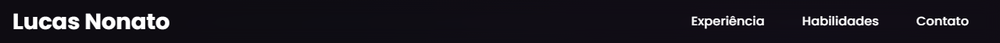
Header scroll inteligente + barra de progresso
Esconde ao rolar para baixo, mostra ao rolar para cima e indica progresso de leitura.
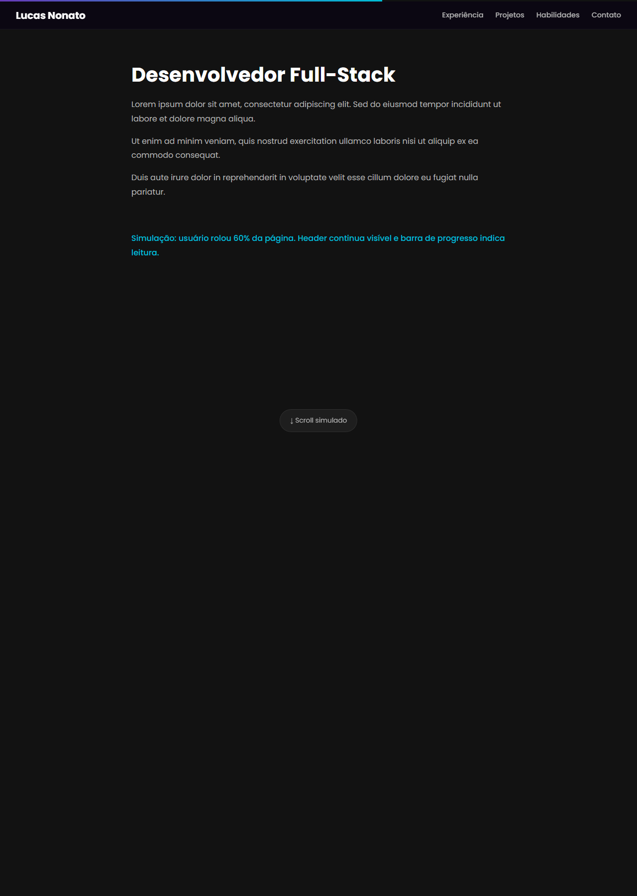
Seção Experience atual
Conteúdo bom, mas com elemento h4 vazio e sem eyebrow/label de seção.
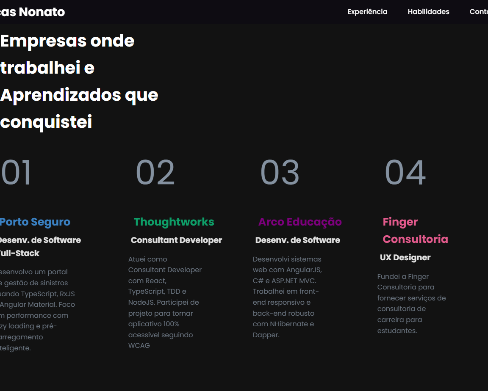
Seção Projetos em Destaque
Substitui/amplia o banner genérico do GitHub por cards reais com demo, código e stack.
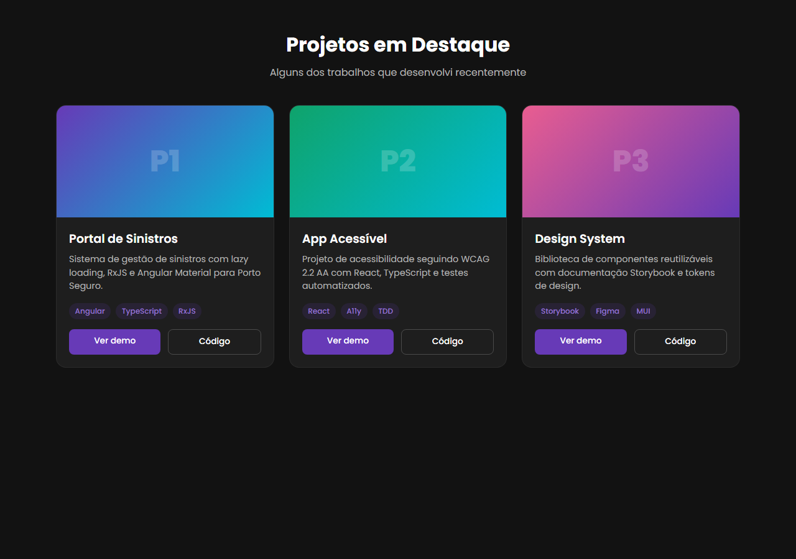
Depoimentos / Recomendações
Carrossel de prova social com foto, nome, cargo e citação.
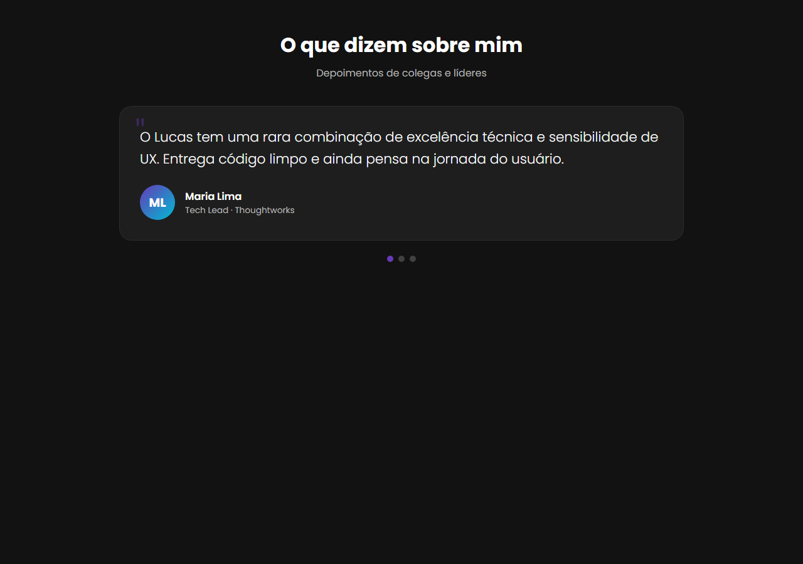
Timeline de Carreira
Narrativa visual da trajetória profissional, formação e conquistas.
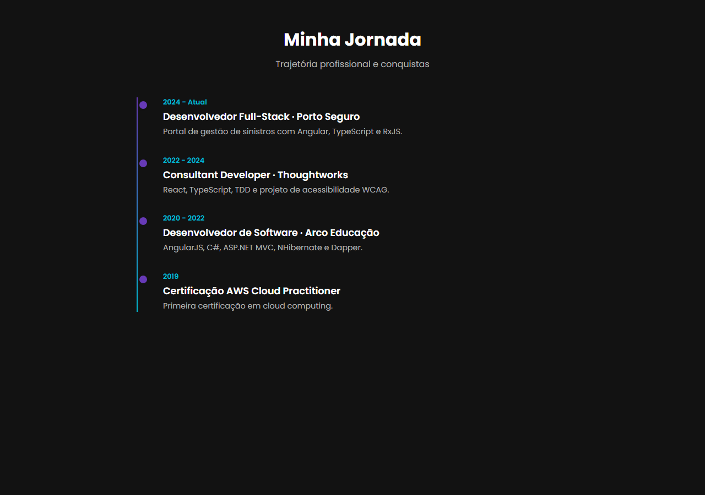
Toggle Tema Claro/Escuro
Respeita preferência do sistema e persiste escolha no localStorage.
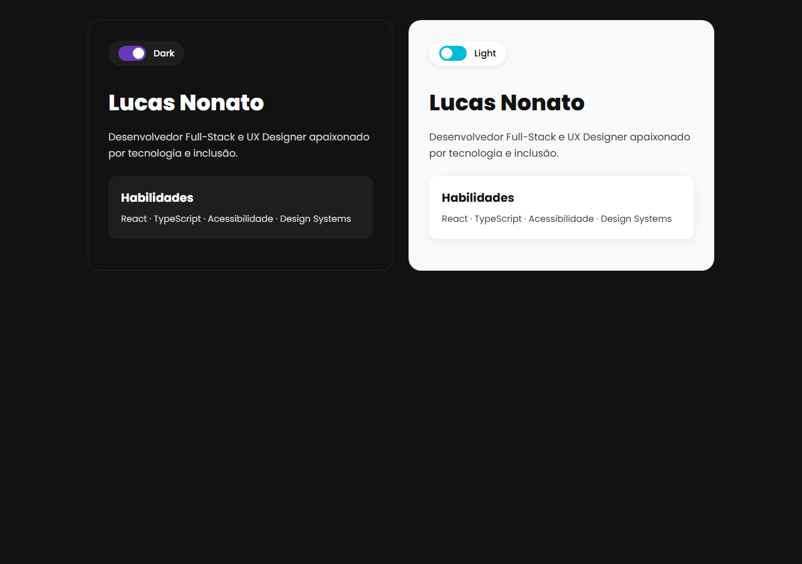
Toolbox Visual
Tecnologias agrupadas por categoria com ícones oficiais.
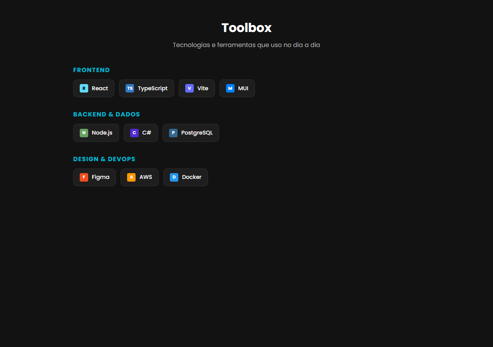
SEO / Link Preview
Comparação de como o link aparece no WhatsApp/LinkedIn antes e depois das metatags.
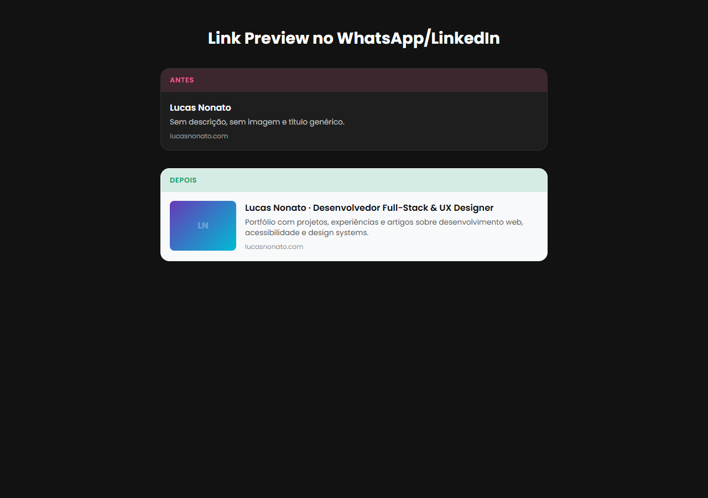
Snackbar Global no Contato
Feedback de sucesso/erro via snackbar fixo, em vez de alert dentro do formulário.
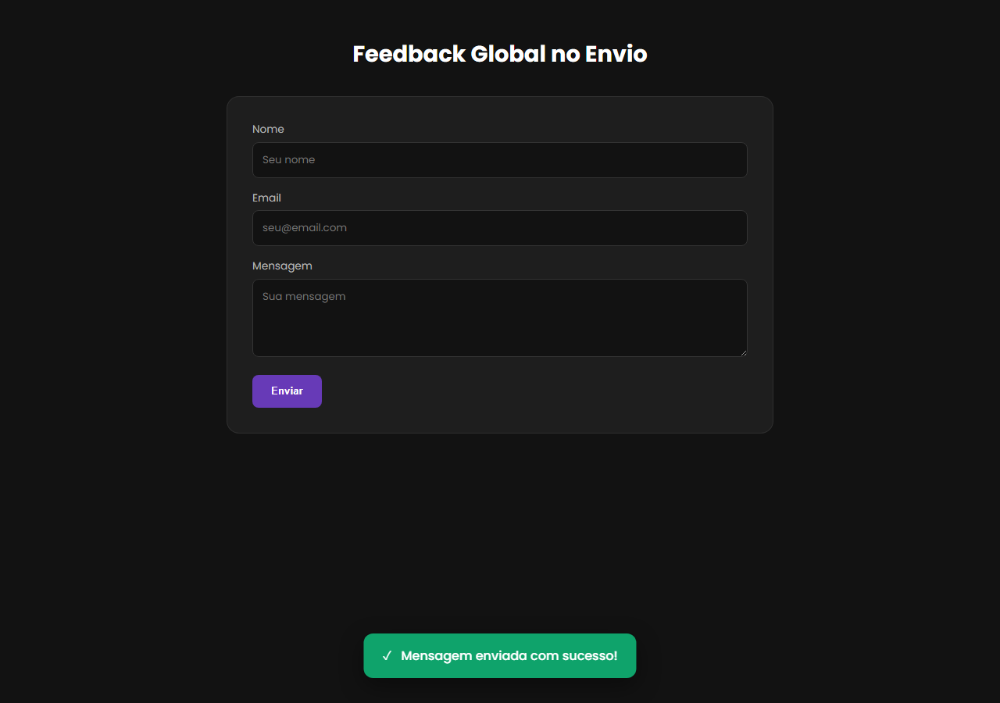
Download de CV
Botão de download de currículo em PDF com rastreamento de analytics.
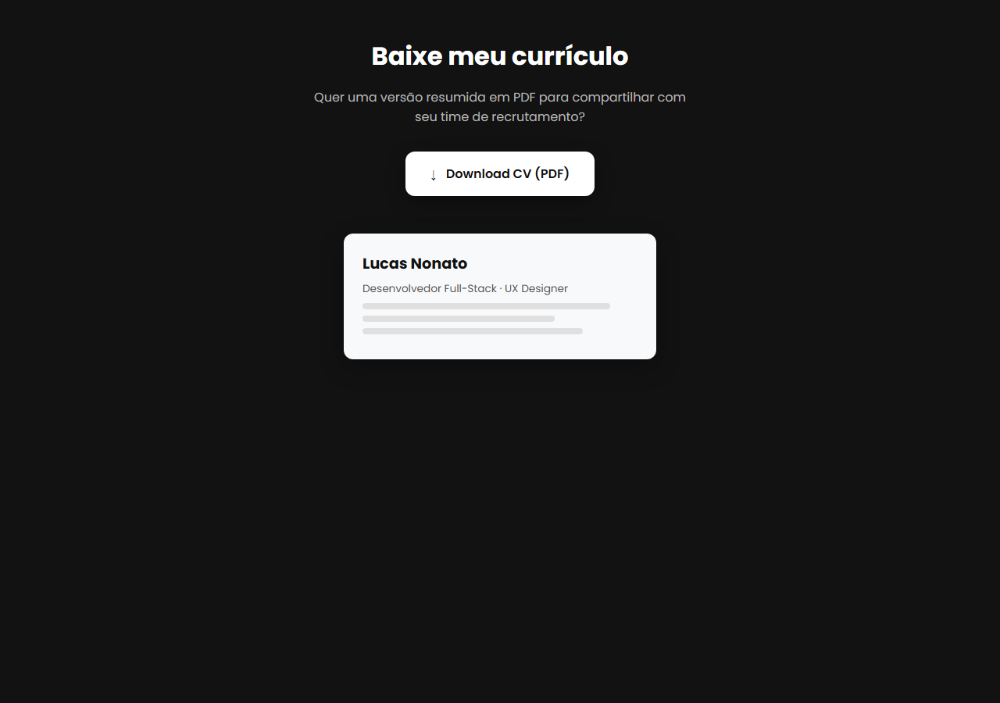